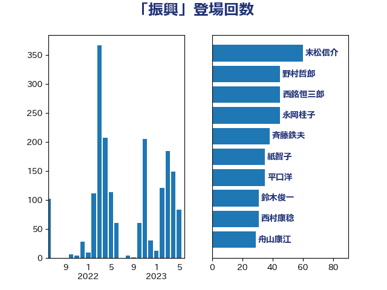

単語「振興」

| 末松信介 | 自由民主党 | 60 回 |
| 野村哲郎 | 自由民主党 | 45 回 |
| 西銘恒三郎 | 自由民主党 | 45 回 |
| 永岡桂子 | 自由民主党 | 45 回 |
| 斉藤鉄夫 | 公明党 | 38 回 |
| 紙智子 | 日本共産党 | 35 回 |
| 平口洋 | 自由民主党 | 35 回 |
| 鈴木俊一 | 自由民主党 | 31 回 |
| 西村康稔 | 自由民主党 | 31 回 |
| 舟山康江 | 国民民主党 | 29 回 |
| 岸田文雄 | 自由民主党 | 27 回 |
| 長友慎治 | 国民民主党 | 22 回 |
| 義家弘介 | 自由民主党 | 19 回 |
| 岡田直樹 | 自由民主党 | 18 回 |
| 神谷裕 | 立憲民主党 | 17 回 |
| 萩生田光一 | 自由民主党 | 13 回 |
| 田村貴昭 | 日本共産党 | 13 回 |
| 徳永エリ | 立憲民主党 | 13 回 |
| 勝部賢志 | 立憲民主党 | 13 回 |
| 笹川博義 | 自由民主党 | 12 回 |
| 金子恵美 | 立憲民主党 | 11 回 |
| 佐藤啓 | 自由民主党 | 11 回 |
| 池畑浩太朗 | 日本維新の会 | 10 回 |
| 山口俊一 | 自由民主党 | 10 回 |
| 宮本岳志 | 日本共産党 | 10 回 |
| 吉田豊史 | 無所属 | 10 回 |
| 鰐淵洋子 | 公明党 | 9 回 |
| 野田聖子 | 自由民主党 | 9 回 |
| 江島潔 | 自由民主党 | 9 回 |
| 柳ヶ瀬裕文 | 日本維新の会 | 9 回 |
| 小林鷹之 | 自由民主党 | 9 回 |
| 佐々木さやか | 公明党 | 9 回 |
| 菊田真紀子 | 立憲民主党 | 8 回 |
| 田村智子 | 日本共産党 | 8 回 |
| 池田佳隆 | 自由民主党 | 8 回 |
| 武部新 | 自由民主党 | 8 回 |
| 庄子賢一 | 公明党 | 8 回 |
| 宮崎雅夫 | 自由民主党 | 8 回 |
| 宮崎政久 | 自由民主党 | 8 回 |
| 宮内秀樹 | 自由民主党 | 8 回 |
| 太田房江 | 自由民主党 | 8 回 |
| 金子恭之 | 自由民主党 | 7 回 |
| 金城泰邦 | 公明党 | 7 回 |
| 荒井優 | 立憲民主党 | 7 回 |
| 簗和生 | 自由民主党 | 7 回 |
| 福島伸享 | 無所属 | 7 回 |
| 橘慶一郎 | 自由民主党 | 7 回 |
| 新垣邦男 | 立憲民主党 | 7 回 |
| 小倉將信 | 自由民主党 | 7 回 |
| 伊波洋一 | 無所属 | 7 回 |
| 高橋はるみ | 自由民主党 | 6 回 |
| 須藤元気 | 無所属 | 6 回 |
| 足立康史 | 日本維新の会 | 6 回 |
| 舩後靖彦 | れいわ新選組 | 6 回 |
| 細田博之 | 自由民主党 | 6 回 |
| 梅谷守 | 立憲民主党 | 6 回 |
| 木原稔 | 自由民主党 | 6 回 |
| 広瀬めぐみ | 自由民主党 | 6 回 |
| 山田勝彦 | 立憲民主党 | 6 回 |
| 小沼巧 | 立憲民主党 | 6 回 |
| 大島敦 | 立憲民主党 | 6 回 |
| 古川元久 | 国民民主党 | 6 回 |
| おおつき紅葉 | 立憲民主党 | 6 回 |
| 藤木眞也 | 自由民主党 | 5 回 |
| 竹内真二 | 公明党 | 5 回 |
| 江藤拓 | 自由民主党 | 5 回 |
| 新妻秀規 | 公明党 | 5 回 |
| 後藤茂之 | 自由民主党 | 5 回 |
| 小山展弘 | 立憲民主党 | 5 回 |
| 安江伸夫 | 公明党 | 5 回 |
| 勝目康 | 自由民主党 | 5 回 |
| 伊藤孝江 | 公明党 | 5 回 |
| 下野六太 | 公明党 | 5 回 |
| 上田英俊 | 自由民主党 | 5 回 |
| 長谷川岳 | 自由民主党 | 4 回 |
| 野中厚 | 自由民主党 | 4 回 |
| 西岡秀子 | 国民民主党 | 4 回 |
| 稲田朋美 | 自由民主党 | 4 回 |
| 福田昭夫 | 立憲民主党 | 4 回 |
| 石井浩郎 | 自由民主党 | 4 回 |
| 牧義夫 | 立憲民主党 | 4 回 |
| 牧山ひろえ | 立憲民主党 | 4 回 |
| 滝波宏文 | 自由民主党 | 4 回 |
| 渡辺猛之 | 自由民主党 | 4 回 |
| 渡辺創 | 立憲民主党 | 4 回 |
| 橋本岳 | 自由民主党 | 4 回 |
| 森屋隆 | 立憲民主党 | 4 回 |
| 林芳正 | 自由民主党 | 4 回 |
| 松野博一 | 自由民主党 | 4 回 |
| 松本剛明 | 自由民主党 | 4 回 |
| 平林晃 | 公明党 | 4 回 |
| 平山佐知子 | 無所属 | 4 回 |
| 岬麻紀 | 日本維新の会 | 4 回 |
| 山井和則 | 立憲民主党 | 4 回 |
| 中野英幸 | 自由民主党 | 4 回 |
| 里見隆治 | 公明党 | 3 回 |
| 近藤和也 | 立憲民主党 | 3 回 |
| 足立敏之 | 自由民主党 | 3 回 |
| 赤羽一嘉 | 公明党 | 3 回 |
| 赤松健 | 自由民主党 | 3 回 |
| 西田実仁 | 公明党 | 3 回 |
| 若林健太 | 自由民主党 | 3 回 |
| 美延映夫 | 日本維新の会 | 3 回 |
| 礒崎哲史 | 国民民主党 | 3 回 |
| 石田真敏 | 自由民主党 | 3 回 |
| 石井苗子 | 日本維新の会 | 3 回 |
| 石井正弘 | 自由民主党 | 3 回 |
| 田名部匡代 | 立憲民主党 | 3 回 |
| 田中英之 | 自由民主党 | 3 回 |
| 清水真人 | 自由民主党 | 3 回 |
| 浮島智子 | 公明党 | 3 回 |
| 河西宏一 | 公明党 | 3 回 |
| 沢田良 | 日本維新の会 | 3 回 |
| 水岡俊一 | 立憲民主党 | 3 回 |
| 比嘉奈津美 | 自由民主党 | 3 回 |
| 杉本和巳 | 日本維新の会 | 3 回 |
| 本田太郎 | 自由民主党 | 3 回 |
| 斎藤アレックス | 国民民主党 | 3 回 |
| 島尻安伊子 | 自由民主党 | 3 回 |
| 岩渕友 | 日本共産党 | 3 回 |
| 山岸一生 | 立憲民主党 | 3 回 |
| 山岡達丸 | 立憲民主党 | 3 回 |
| 室井邦彦 | 日本維新の会 | 3 回 |
| 加藤竜祥 | 自由民主党 | 3 回 |
| 伊藤渉 | 公明党 | 3 回 |
| 井上貴博 | 自由民主党 | 3 回 |
| 串田誠一 | 日本維新の会 | 3 回 |
| ながえ孝子 | 無所属 | 3 回 |
| 黄川田仁志 | 自由民主党 | 2 回 |
| 高階恵美子 | 自由民主党 | 2 回 |
| 高橋光男 | 公明党 | 2 回 |
| 高木毅 | 自由民主党 | 2 回 |
| 高市早苗 | 自由民主党 | 2 回 |
| 音喜多駿 | 日本維新の会 | 2 回 |
| 青山繁晴 | 自由民主党 | 2 回 |
| 阿部知子 | 立憲民主党 | 2 回 |
| 長谷川英晴 | 自由民主党 | 2 回 |
| 長峯誠 | 自由民主党 | 2 回 |
| 鈴木義弘 | 国民民主党 | 2 回 |
| 金村龍那 | 日本維新の会 | 2 回 |
| 野上浩太郎 | 自由民主党 | 2 回 |
| 輿水恵一 | 公明党 | 2 回 |
| 谷公一 | 自由民主党 | 2 回 |
| 西野太亮 | 自由民主党 | 2 回 |
| 藤巻健太 | 日本維新の会 | 2 回 |
| 芳賀道也 | 国民民主党 | 2 回 |
| 竹谷とし子 | 公明党 | 2 回 |
| 稲津久 | 公明党 | 2 回 |
| 福岡資麿 | 自由民主党 | 2 回 |
| 石橋通宏 | 立憲民主党 | 2 回 |
| 石原正敬 | 自由民主党 | 2 回 |
| 石井章 | 日本維新の会 | 2 回 |
| 田野瀬太道 | 無所属 | 2 回 |
| 田中健 | 国民民主党 | 2 回 |
| 玉木雄一郎 | 国民民主党 | 2 回 |
| 猪瀬直樹 | 日本維新の会 | 2 回 |
| 牧原秀樹 | 自由民主党 | 2 回 |
| 浜地雅一 | 公明党 | 2 回 |
| 河野義博 | 公明党 | 2 回 |
| 森田俊和 | 立憲民主党 | 2 回 |
| 柴田巧 | 日本維新の会 | 2 回 |
| 東国幹 | 自由民主党 | 2 回 |
| 有村治子 | 自由民主党 | 2 回 |
| 早稲田ゆき | 立憲民主党 | 2 回 |
| 日下正喜 | 公明党 | 2 回 |
| 市村浩一郎 | 日本維新の会 | 2 回 |
| 川崎ひでと | 自由民主党 | 2 回 |
| 岩田和親 | 自由民主党 | 2 回 |
| 岡本三成 | 公明党 | 2 回 |
| 山田賢司 | 自由民主党 | 2 回 |
| 山本左近 | 自由民主党 | 2 回 |
| 山本啓介 | 自由民主党 | 2 回 |
| 山口壯 | 自由民主党 | 2 回 |
| 尾身朝子 | 自由民主党 | 2 回 |
| 小里泰弘 | 自由民主党 | 2 回 |
| 小沢雅仁 | 立憲民主党 | 2 回 |
| 宮口治子 | 立憲民主党 | 2 回 |
| 奥野総一郎 | 立憲民主党 | 2 回 |
| 堀井巌 | 自由民主党 | 2 回 |
| 城井崇 | 立憲民主党 | 2 回 |
| 坂本哲志 | 自由民主党 | 2 回 |
| 國場幸之助 | 自由民主党 | 2 回 |
| 国光あやの | 自由民主党 | 2 回 |
| 原口一博 | 立憲民主党 | 2 回 |
| 北神圭朗 | 無所属 | 2 回 |
| 勝俣孝明 | 自由民主党 | 2 回 |
| 伊藤忠彦 | 自由民主党 | 2 回 |
| 伊藤孝恵 | 国民民主党 | 2 回 |
| 中根一幸 | 自由民主党 | 2 回 |
| 中村裕之 | 自由民主党 | 2 回 |
| 中川宏昌 | 公明党 | 2 回 |
| 上野通子 | 自由民主党 | 2 回 |
| 三上えり | 立憲民主党 | 2 回 |
| 三ッ林裕巳 | 自由民主党 | 2 回 |
| 鳩山二郎 | 自由民主党 | 1 回 |
| 鬼木誠 | 立憲民主党 | 1 回 |
| 高鳥修一 | 自由民主党 | 1 回 |
| 高良鉄美 | 無所属 | 1 回 |
| 高木啓 | 自由民主党 | 1 回 |
| 馬場成志 | 自由民主党 | 1 回 |
| 青木一彦 | 自由民主党 | 1 回 |
| 青島健太 | 日本維新の会 | 1 回 |
| 関芳弘 | 自由民主党 | 1 回 |
| 長浜博行 | 無所属 | 1 回 |
| 長島昭久 | 自由民主党 | 1 回 |
| 鈴木敦 | 国民民主党 | 1 回 |
| 野間健 | 立憲民主党 | 1 回 |
| 重徳和彦 | 立憲民主党 | 1 回 |
| 遠藤良太 | 日本維新の会 | 1 回 |
| 道下大樹 | 立憲民主党 | 1 回 |
| 進藤金日子 | 自由民主党 | 1 回 |
| 近藤昭一 | 立憲民主党 | 1 回 |
| 赤澤亮正 | 自由民主党 | 1 回 |
| 赤池誠章 | 自由民主党 | 1 回 |
| 赤木正幸 | 日本維新の会 | 1 回 |
| 豊田俊郎 | 自由民主党 | 1 回 |
| 谷合正明 | 公明党 | 1 回 |
| 角田秀穂 | 公明党 | 1 回 |
| 西田昭二 | 自由民主党 | 1 回 |
| 藤川政人 | 自由民主党 | 1 回 |
| 藤井比早之 | 自由民主党 | 1 回 |
| 茂木敏充 | 自由民主党 | 1 回 |
| 若宮健嗣 | 自由民主党 | 1 回 |
| 船橋利実 | 自由民主党 | 1 回 |
| 舞立昇治 | 自由民主党 | 1 回 |
| 緒方林太郎 | 無所属 | 1 回 |
| 緑川貴士 | 立憲民主党 | 1 回 |
| 篠原豪 | 立憲民主党 | 1 回 |
| 篠原孝 | 立憲民主党 | 1 回 |
| 笠浩史 | 無所属 | 1 回 |
| 笠井亮 | 日本共産党 | 1 回 |
| 竹内譲 | 公明党 | 1 回 |
| 空本誠喜 | 日本維新の会 | 1 回 |
| 秋野公造 | 公明党 | 1 回 |
| 福島みずほ | 社会民主党 | 1 回 |
| 神谷宗幣 | 参政党 | 1 回 |
| 神田潤一 | 自由民主党 | 1 回 |
| 石川大我 | 立憲民主党 | 1 回 |
| 石垣のりこ | 立憲民主党 | 1 回 |
| 石原宏高 | 自由民主党 | 1 回 |
| 石井啓一 | 公明党 | 1 回 |
| 白石洋一 | 立憲民主党 | 1 回 |
| 田村憲久 | 自由民主党 | 1 回 |
| 田村まみ | 国民民主党 | 1 回 |
| 渡辺博道 | 自由民主党 | 1 回 |
| 浜田聡 | NHK党 | 1 回 |
| 浜口誠 | 国民民主党 | 1 回 |
| 津島淳 | 自由民主党 | 1 回 |
| 泉健太 | 立憲民主党 | 1 回 |
| 河野太郎 | 自由民主党 | 1 回 |
| 水野素子 | 立憲民主党 | 1 回 |
| 武井俊輔 | 自由民主党 | 1 回 |
| 櫻井周 | 立憲民主党 | 1 回 |
| 横山信一 | 公明党 | 1 回 |
| 森本真治 | 立憲民主党 | 1 回 |
| 森山浩行 | 立憲民主党 | 1 回 |
| 梅村聡 | 日本維新の会 | 1 回 |
| 柿沢未途 | 無所属 | 1 回 |
| 柴山昌彦 | 自由民主党 | 1 回 |
| 柳本顕 | 自由民主党 | 1 回 |
| 枝野幸男 | 立憲民主党 | 1 回 |
| 松野明美 | 日本維新の会 | 1 回 |
| 松木けんこう | 立憲民主党 | 1 回 |
| 杉田水脈 | 自由民主党 | 1 回 |
| 杉久武 | 公明党 | 1 回 |
| 後藤祐一 | 立憲民主党 | 1 回 |
| 平木大作 | 公明党 | 1 回 |
| 川田龍平 | 立憲民主党 | 1 回 |
| 岡本あき子 | 立憲民主党 | 1 回 |
| 山田美樹 | 自由民主党 | 1 回 |
| 山田太郎 | 自由民主党 | 1 回 |
| 山東昭子 | 自由民主党 | 1 回 |
| 山本佐知子 | 自由民主党 | 1 回 |
| 山崎誠 | 立憲民主党 | 1 回 |
| 山崎正恭 | 公明党 | 1 回 |
| 山下貴司 | 自由民主党 | 1 回 |
| 尾崎正直 | 自由民主党 | 1 回 |
| 小田原潔 | 自由民主党 | 1 回 |
| 小熊慎司 | 立憲民主党 | 1 回 |
| 小泉進次郎 | 自由民主党 | 1 回 |
| 小森卓郎 | 自由民主党 | 1 回 |
| 小林一大 | 自由民主党 | 1 回 |
| 小寺裕雄 | 自由民主党 | 1 回 |
| 小宮山泰子 | 立憲民主党 | 1 回 |
| 宮路拓馬 | 自由民主党 | 1 回 |
| 宮崎勝 | 公明党 | 1 回 |
| 宮下一郎 | 自由民主党 | 1 回 |
| 守島正 | 日本維新の会 | 1 回 |
| 大野敬太郎 | 自由民主党 | 1 回 |
| 塩崎彰久 | 自由民主党 | 1 回 |
| 和田義明 | 自由民主党 | 1 回 |
| 和田政宗 | 自由民主党 | 1 回 |
| 吉井章 | 自由民主党 | 1 回 |
| 古賀篤 | 自由民主党 | 1 回 |
| 古賀之士 | 立憲民主党 | 1 回 |
| 古川禎久 | 自由民主党 | 1 回 |
| 古川康 | 自由民主党 | 1 回 |
| 古屋範子 | 公明党 | 1 回 |
| 務台俊介 | 自由民主党 | 1 回 |
| 加藤勝信 | 自由民主党 | 1 回 |
| 住吉寛紀 | 日本維新の会 | 1 回 |
| 今枝宗一郎 | 自由民主党 | 1 回 |
| 今井絵理子 | 自由民主党 | 1 回 |
| 仁木博文 | 無所属 | 1 回 |
| 井出庸生 | 自由民主党 | 1 回 |
| 五十嵐清 | 自由民主党 | 1 回 |
| 中野洋昌 | 公明党 | 1 回 |
| 中川郁子 | 自由民主党 | 1 回 |
| 中川康洋 | 公明党 | 1 回 |
| 中島克仁 | 立憲民主党 | 1 回 |
| 中山展宏 | 自由民主党 | 1 回 |
| 中司宏 | 日本維新の会 | 1 回 |
| 上川陽子 | 自由民主党 | 1 回 |
| 三谷英弘 | 自由民主党 | 1 回 |
| 三反園訓 | 無所属 | 1 回 |
| たがや亮 | れいわ新選組 | 1 回 |